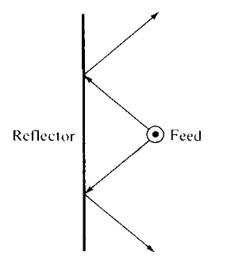
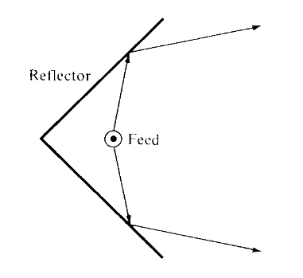
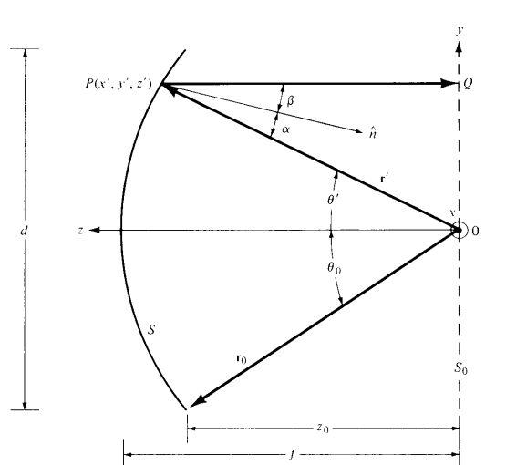
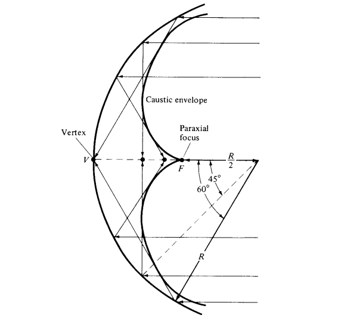

Antenas
Refletoras
Universidade Federal do Ceará - Campus de Quixadá
Ondas e Antenas | Prof. Dr. Antonio Joel Ramiro de Castro
2026.1
Modelos Analisados no Seminário

Por que usar Antenas Refletoras?
Os refletores são as soluções mais eficientes na engenharia de telecomunicações para atingir alta diretividade e ganho extremo.
Diretividade Extrema
Concentram a energia irradiada em feixes extremamente estreitos, ideais para longa distância.
Ganho Elevado
A área física do refletor converte frentes de onda esféricas em planas de alta intensidade.
Aplicações Espaciais
Indispensáveis para radioastronomia, rastreamento de satélites e espaço profundo.
Modificação de Feixe
Permitem moldar geometricamente o diagrama para atender áreas de cobertura específicas.
Simplicidade Mecânica
Estruturas metálicas precisas alimentadas por fontes primárias simples (dipolos ou cornetas).
Operação em Micro-ondas
Desempenho ótimo em frequências elevadas onde o refletor se torna eletricamente grande.




Antenas Refletoras – Equações‑chave
As expressões abaixo, extraídas do Capítulo 15 de Balanis (3ª ed.), resumem a geometria, o arranjo e a corrente induzida nos principais tipos de refletores.
⚡ Clique em qualquer equação para expandir com diagrama, gráfico e tabela de variáveis.
Refletor Plano
Analisado pela Teoria das Imagens (Seção 4.7). O plano condutor é substituído por uma fonte virtual:
- Dipolo vertical → imagem com mesma polaridade (+1)
- Dipolo horizontal → imagem com polaridade oposta (–1)
Campo total = campo direto + campo da imagem.
Refletor de Canto (90°)
Fator de arranjo que soma as contribuições das imagens múltiplas:
\(X = ks\sin\theta\cos\phi\), \(Y = ks\sin\theta\sin\phi\), \(s\) = distância do vértice.
📘 Para ângulos de 60°, 45° e 30°, ver Eqs. 15‑7 a 15‑9.
Refletor Parabólico
Geometria:
Relação f/d:
Corrente induzida (Óptica Física):
Refletor Esférico
Devido à aberração esférica, não há uma equação fechada única. A análise requer:
- Funções de Bessel esféricas
- Polinômios de Legendre
- Técnicas de correção de fase (alimentadores lineares ou sub‑refletores)
Vantagem: varredura do feixe movendo apenas o alimentador.
Ocorre quando a iluminação na borda do refletor está entre -8 dB e -11 dB (Fig. 15.20).
Paraboloide + hiperboloide → alimentador atrás do refletor.
Parábola equivalente facilita os cálculos.
Demonstração Interativa: SmartReflect Lab
Resumo Geral do Conteúdo
Conclusão do Seminário
"A transição dos modelos estáticos planos para sistemas focais reconfiguráveis consolida a importância da geometria no controle e otimização das comunicações modernas de alto ganho."